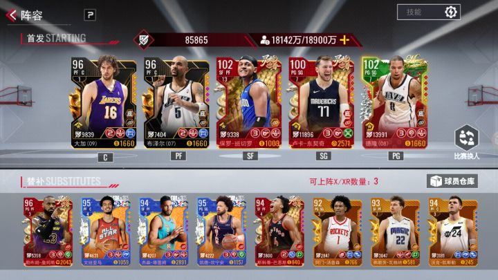
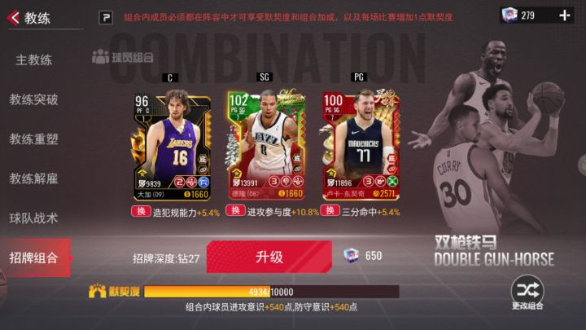
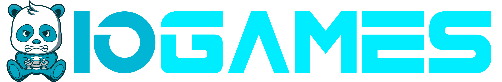

The Hard Truth About Your BasketballMoomoo.io Runs
You keep getting robbed blind and watching your score flatline because you play like a total casual. I have over two thousand hours in this game. I have seen every pathetic mistake in the book, and I am here to call them out. You think mashing the mouse and sprinting straight at the hoop makes you a star? You are wrong. You are just feeding the other team. If you want to stop embarrassing yourself in the arena and actually dominate the scoreboard, you need to fix your fundamentals. Read every single mistake below. If you ignore even one of these fatal flaws, you will keep losing to players who actually understand how this game works. Stop whining about lag and start learning.

| # | Mistake | Quick Fix |
|---|---|---|
| 1 | You Stare Only at the Ball | Force yourself to use peripheral vision |
| 2 | You Steal at the Wrong Time | Stop spamming the steal mechanic |
| 3 | You Ignore Mouse Precision | Lower your mouse sensitivity and use your wrist for micro-adjustments |
| 4 | You Play Hero Ball | Pass the ball and move without it |
| 5 | You Forget to Track the Scoreboard | Glance at the scoreboard and the game clock every time you cross half-court |
You Stare Only at the Ball
You keep your eyes glued directly on the basketball the entire match. You ignore the rest of the court, the opponent's positioning, and the open lanes. When you have the ball, you tunnel vision on the hoop. When you do not have it, you just chase the player holding it like a mindless drone. You fail to observe the field and change positions appropriately. You are completely blind to the secondary threats closing in on your blind side while you stare at the leather.
This tunnel vision gets you stripped instantly. In a fast-paced arena, the player you are chasing is often just a decoy. While you focus entirely on the ball handler, their teammate flanks you and steals your possession. On offense, ignoring the court means you drive straight into a double team. You lose the ball because you do not see the trap until it is already sprung. You cost your team the game because you lack basic spatial awareness.
Force yourself to use peripheral vision. Keep the ball in your center screen, but actively scan the edges for incoming defenders. Before you drive to the basket, do a quick mental sweep of the court to identify open teammates. When defending, watch the opponent's hips and shoulders, not just the ball. This lets you anticipate their passes and cuts. By observing the entire field, you can change positions appropriately and intercept lazy passes instead of constantly reacting a second too late.
You Steal at the Wrong Time
You spam the steal button the second you get within range of the ball handler. You do not wait for the right moment. You just lunge forward blindly, hoping to get lucky and take the ball. You ignore the opponent's momentum and try to strip them while they are fully protected or moving at top speed. You think aggressive, constant stealing is the key to winning, but you are just throwing your character into the meat grinder without any tactical timing.
Spamming steals leaves you completely vulnerable and out of position. When you lunge and miss, your character has a brief recovery animation. The opponent simply uses this window to accelerate past you and score an easy layup. Even worse, if you steal the ball at the wrong time, you often just knock it out of bounds or directly to their teammate. You lose defensive integrity and give up high-percentage shots because you cannot recover from your own reckless, poorly timed aggression.
Stop spamming the steal mechanic. Wait for the opponent to make a mistake. Steal the ball at the right time, specifically when they stop dribbling, change direction abruptly, or turn their back to you. Let them drive into your defensive zone, then time your steal to coincide with their momentary loss of control. Once you successfully strip the ball, immediately accelerate towards the basket. Patience on defense guarantees you maintain your positioning and creates fast-break opportunities on offense.

You Ignore Mouse Precision
You use the mouse to control your character like a sloppy joystick. You make wide, sweeping movements across the screen instead of making micro-adjustments. When you need to move flexibly to win the ball or thread a pass through a tight gap, you jerk your cursor across the pad. You fail to practice smoothly before entering the match, relying on raw, unrefined flicks instead of deliberate, calculated cursor placement to navigate the vibrant virtual arena.
Wide mouse movements destroy your ball handling and defensive footwork. When you jerk the cursor, your character overshoots the intended path. This lack of precision means you miss open teammates by a mile on passes and fail to cut off driving lanes on defense. In a game where milliseconds and pixels matter, overshooting your movement puts you out of position. You lose the ball simply because your physical input is too clumsy to execute the delicate ball handling required to overcome your opponents.
Lower your mouse sensitivity and use your wrist for micro-adjustments. Practice smoothly before entering the match by doing figure-eight drills in the empty arena. Keep your movements tight and deliberate. When moving flexibly to win the ball, use small, precise mouse flicks to stay exactly in your opponent's path. Throw the ball into the basket using controlled, smooth arcs rather than erratic snaps. Mastering mouse precision gives you the delicate touch needed to dominate the court.
You Play Hero Ball
You grab the rebound and immediately try to take it coast-to-coast by yourself. You refuse to pass the ball, ignoring your teammates completely. You think you are the main factor of the team and that you can overcome every opponent through sheer individual skill. You dribble through triple teams, waste time on the perimeter, and force heavily contested shots. You treat this team-based simulation like a single-player highlight reel, completely ignoring the coordinated nature of the sport.
Playing hero ball guarantees you will get stripped or blocked. The arena is designed to punish isolation plays. When you refuse to pass, the defense collapses on you. You lose control of the ball because you are fighting three defenders at once. Even if you manage to shoot, heavily contested shots have a terrible conversion rate. You drain the clock and kill your team's momentum. You lose the match not because you lack skill, but because your selfish playstyle makes you incredibly easy to defend.
Pass the ball and move without it. When you secure a rebound, look for the open man immediately. If you drive and the defense collapses, kick it out to an unguarded teammate. Use quick coordinate passes to shift the defense and create open lanes. Only take the shot when you have a clear path to the basket. Trusting your teammates and playing within the system forces the defense to stretch, creating the spectacular scoring opportunities you were selfishly trying to force.
You Forget to Track the Scoreboard
You play every single possession exactly the same, completely ignoring the game clock and the current point differential. You do not check the scoreboard to see if you are up by ten or down by two. You take the exact same risks in the final ten seconds as you do in the first minute. You fail to adapt your strategy to the match context, treating a blowout victory and a one-point nail-biter with the exact same reckless, unthinking approach.
Basketball is a game of clock management. Ignoring the scoreboard leads to catastrophic late-game decisions. If you are up by two points with ten seconds left, forcing a fast break and turning the ball over gives the opponent a chance to tie the game. If you are down by three, taking a contested two-pointer instead of a quick three-pointer seals your loss. You lose close matches because you lack the situational awareness to manage the clock, wasting crucial possessions when the game is on the line.
Glance at the scoreboard and the game clock every time you cross half-court. Adjust your aggression based on the point differential. If you are winning late, slow the pace, protect the ball, and run out the clock. If you are losing, push the tempo and take calculated risks to score quickly. Communicate the time remaining to your team. Situational awareness ensures you make the right tactical choices when it matters most, turning potential late-game collapses into secure victories.

The Bottom Line
The number one thing that separates winners from losers in this arena is not raw mechanical skill. It is discipline. The losers spam steals, tunnel vision on the ball, and play selfish hero ball. The winners observe the field, time their steals perfectly, and execute with mouse precision. Stop relying on lucky flicks and start playing with intentional, calculated discipline. Fix these five fatal mistakes, and you will stop feeding the enemy team. Now get back in the server, apply these corrections, and prove you actually belong on the court.